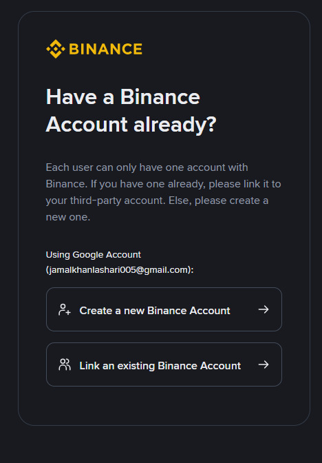
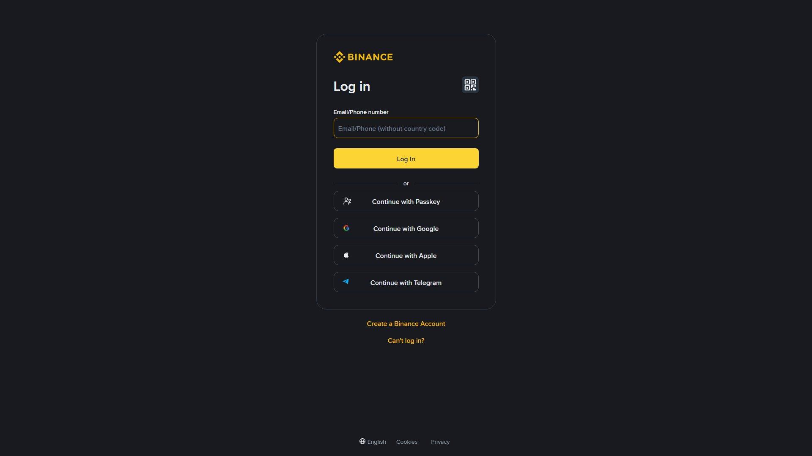
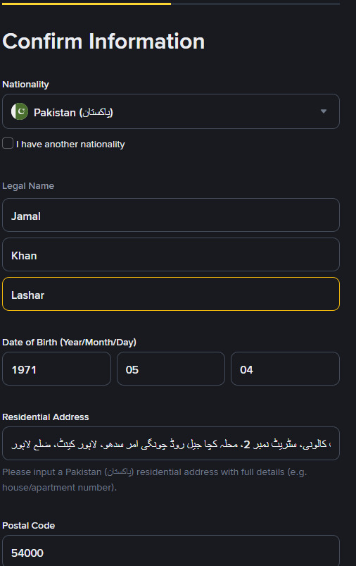
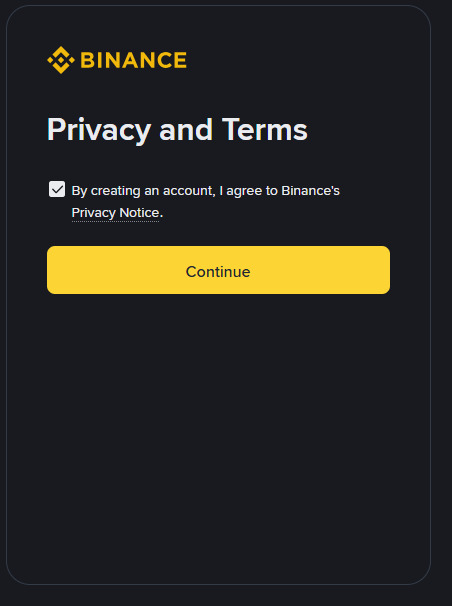
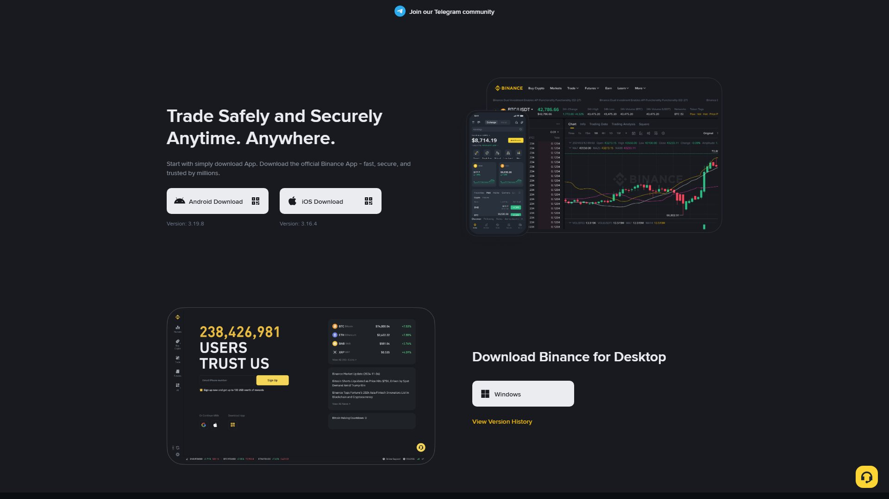
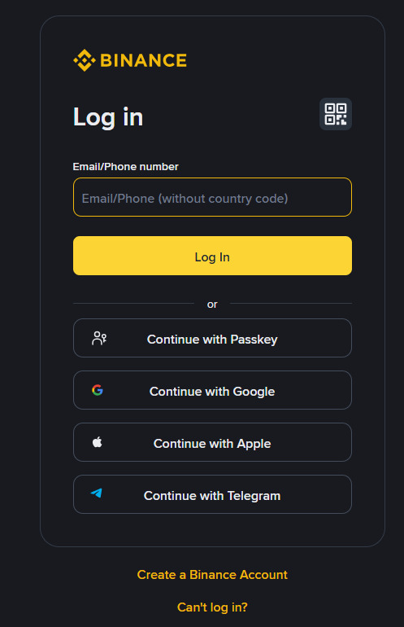

اکاؤنٹ کھولنا آپ کے بائننس سفر کا پہلا قدم ہے — اور یہ صرف 5 منٹ کا کام ہے۔ مگر ایک غلط ای میل، کمزور پاس ورڈ، یا جعلی لنک — یہ تینوں آپ کے پیسوں کے لیے مہنگے ثابت ہو سکتے ہیں۔ اس باب میں ہر قدم کو تفصیل سے سمجھیں گے، تاکہ پہلی بار ہی اکاؤنٹ محفوظ اور مکمل ہو۔

| چیز | ضرورت | نوٹ |
|---|---|---|
| ای میل | ✅ لازمی | ایسا ای میل جو آپ روز چیک کرتے ہیں (Gmail سب سے بہتر) |
| فون نمبر | ✅ لازمی | فعال نمبر (SMS تصدیق کے لیے) |
| مضبوط پاس ورڈ | ✅ لازمی | 12+ کریکٹرز (نیچے فارمولا دیا ہے) |
| محفوظ انٹرنیٹ | ✅ ضروری | عوامی Wi-Fi سے گریز کریں |
| CNIC | ✅ بعد میں | KYC (باب 3) کے لیے |
| کیمرہ | ✅ بعد میں | سیلفی / Liveness چیک کے لیے |
| قسم | مشورہ | وجہ |
|---|---|---|
| Gmail | ✅ سب سے بہتر | سب سے زیادہ سپورٹڈ، سیکیورٹی الرٹس |
| Outlook / Yahoo | ✅ ٹھیک ہے | عام استعمال |
| کمپنی/اسکول کا ای میل | ❌ کبھی نہیں | چھوڑنے پر رسائی خطرے میں |
| عوامی/فری میل (غیر معروف) | ⚠️ گریز | سپام میں گم ہو سکتی ہیں |
🔐 طلائی قاعدہ: بائننس کا ای میل ایک专用 رکھیں — صرف بائننس اور آپ کا پاس ورڈ مینیجر اسے جانے۔ ایک ہی ای میل ہر جگہ استعمال نہ کریں۔
صرف سرکاری ویب سائٹ
www.binance.comاستعمال کریں۔ واٹس ایپ، ٹیلی گرام، فیس بک، یا YouTube کے تفصیل خانے (description) میں ملنے والے لنکس پر کبھی کلک نہ کریں — یہ فلشنگ (Phishing) سائٹس ہو سکتی ہیں جو آپ کا پاس ورڈ چرا لیتی ہیں۔
| اصلی ✅ | جعلی ❌ |
|---|---|
binance.com | binance-login.com |
accounts.binance.com | binance-verify.com |
www.binance.com | binance.io (مستقل نہیں) |
| سائٹ پر پیڈلاک 🔒 + Binance کا درست لوگو | ہجومگینگ سپلینگ (ہجومی املا) |
چیک لسٹ (ہر بار لاگ ان سے پہلے):
binance.com ہے؟💡 ٹپ: ایک بار درست
binance.comکھول کر اسے Bookmark (محفوظ) کر لیں۔ آئندہ ہمیشہ بوک مارک سے کھولیں — کبھی سرچ یا لنک سے نہیں۔
براؤزر میں ٹائپ کریں: www.binance.com💡 اپنے براؤزر میں اسے محفوظ (Bookmark) کر لیں تاکہ آئندہ غلط لنک نہ کھلیں۔

بائننس دو طریقے دیتا ہے:
| طریقہ | فائدہ | نقصان |
|---|---|---|
| ای میل (Email) | بہتر سیکیورٹی، رابطہ آسان | تصدیق میں ذرا وقت |
| فون نمبر (Phone) | فوری تصدیق | نمبر تبدیل ہو تو پیچیدگی |
✅ مشورہ: ای میل سے رجسٹر کریں — یہ زیادہ محفوظ ہے، کیونکہ فون گم ہونے پر بھی ای میل تک رسائی رہتی ہے۔ نمبر بعد میں بھی شامل کر سکتے ہیں۔

ای میل کے طریقے میں:
Email: your_email@example.com
Password: ******** (12+ کریکٹرز)
Referral Code: (اختیاری — اگر کسی نے دیا ہے)⚠️ پاس ورڈ کے بارے میں: ایسا پاس ورڈ رکھیں جو کہیں اور استعمال نہ کیا ہو۔ کم از کم 12 کریکٹرز، بڑے-چھوٹے حروف، نمبر، اور علامت۔
فون نمبر کے طریقے میں:
Phone Number: +92 3XX XXXXXXX
Password: ********💡 اگر ای میل نہ ملے: Spam / Junk / Promotions فولڈر چیک کریں۔ پھر بھی نہ ہو تو "Resend Code" دبائیں۔

آپ کا بائننس اکاؤنٹ بن گیا۔ مگر یہ ابھی مکمل نہیں۔ اب تین کام باقی ہیں: (1) ای میل/فون کی تصدیق، (2) KYC، (3) سیکیورٹی سیٹ اپ۔ اس کے بغیر آپ کچھ زیادہ نہیں کر سکتے۔

| پلیٹ فارم | ذریعہ | احتیاط |
|---|---|---|
| Android | Google Play Store → "Binance" | ڈویلپر "Binance Limited" چیک کریں |
| iOS | Apple App Store → "Binance" | ڈویلپر "Binance Limited" چیک کریں |
| متبادل (APK) | binance.com کے سرکاری ڈاؤن لوڈ لنکس | صرف سرکاری سائٹ سے، کہیں اور سے نہیں |
⚠️ صرف ڈویلپر "Binance" والی ایپ ڈاؤن لوڈ کریں۔ جعلی ایپس بہت عام ہیں اور آپ کا اکاؤنٹ چرا لیتی ہیں۔ ایک نظر ڈاؤن لوڈز (downloads) اور ریٹنگز پر ڈالیں — اصلی ایپ کروڑوں ڈاؤن لوڈز کی ہوتی ہے۔
بائننس ایپ میں آپ کو دو موڈ مل سکتے ہیں:
| موڈ | مطلب | کب استعمال کریں |
|---|---|---|
| Demo Trading | فرضی پیسوں سے مشق — کوئی حقیقی نقصان نہیں | شروعات کے 1-2 ہفتے |
| Real Trading | حقیقی پیسوں سے ٹریڈنگ | جب پوری طرح تیار ہوں |
💡 نئے صارفین کے لیے طلائی اصول: پہلے Demo پر مشق کریں، کم از کم ایک ہفتہ۔ جب سمجھ آ جائے کہ آرڈر کیسے لگتا ہے، اور آپ نے Market/Limit کا فرق سیکھ لیا، تب کم سرمائے سے حقیقی ٹریڈ شروع کریں۔
📌 نوٹ: Demo اور Real دونوں میں مارکیٹ کی قدرتیں ایک جیسی ہوتی ہیں — فرق صرف پیسے کا ہے۔ اس لیے Demo پر جو حکمت عملہ کام کرتی ہے، وہ Real پر بھی کام کرے گی — مگر احساسات (emotions) صرف Real میں آتے ہیں۔

| مسئلہ | حل |
|---|---|
| ای میل نہیں آیا | Spam/Junk چیک → Resend → 5 منٹ انتظار |
| SMS نہیں آیا | نیٹ ورک کا مسئلہ → Resend → نمبر چیک |
| کوڈ expire ہو گیا | نیا کوڈ مانگیں |
| ای میل غلط درج ہوا | ابھی اکاؤنٹ استعمال نہ کریں — سپورٹ سے رابطہ |
⚠️ اہم: تصدیق مکمل کیے بغیر آپ ڈیپازٹ/وائیدراول نہیں کر سکتے۔ یہ بائننس کا Anti-Money-Laundering (AML) نظام ہے۔
پاس ورڈ آپ کے اکاؤنٹ کی پہلی دیوار ہے۔ کمزور پاس ورڈ = کھلا دروازہ۔
| شرط | کیوں | مثال |
|---|---|---|
| لمبائی 12+ | ہر اضافی کریکٹر ہیکنگ کو 100x مشکل | Mjn2026!Bsnd$Hai |
| تنوع | بڑے + چھوٹے + نمبر + علامت | Aa1! سب شامل |
| منفرد | کہیں اور استعمال نہ ہو | صرف بائننس کے لیے |
| یادگار | ذہن میں رہے، مگر اندازہ نہ لگے | جملے سے بنائیں |
بنیاد جملہ: "مجھے بائننس 2026 میں پسند ہے"
پاس ورڈ: Mjn2026!Bsnd$Haiاصول: ایک جملہ لیں → ہر لفظ کا پہلا حرف لکھیں → کچھ حروف بڑے کریں → نمبر اور علامت شامل کریں۔
12345678, password, qwerty — فوری ہیک ہو جاتے ہیں (سیکنڈوں میں)ahmed1990) — آسان اندازہ| سوال | اگر جواب "ہاں" ہے |
|---|---|
| کیا یہ 12+ کریکٹرز کا ہے؟ | ✅ اچھا |
| کیا اس میں 4 طرح (بڑے/چھوٹے/نمبر/علامت) ہیں؟ | ✅ اچھا |
| کیا کسی اور ویب سائٹ پر یہی استعمال نہیں کیا؟ | ✅ بہترین |
| کیا کوئی اسے اندازہ لگا سکتا ہے (نام، نمبر، تاریخ)؟ | ❌ بدل دیں |
| کیا یہ کسی فائل/چیٹ میں لکھا ہے؟ | ❌ بدل دیں |
🔐 سنہری اصول: بائننس کا پاس ورڈ اپنے ای میل کے پاس ورڈ سے مختلف رکھیں۔ اگر ای میل ہیک ہو جائے تو بائننس اب بھی محفوظ رہے۔
رجسٹریشن کے وقت آپ سے Referral ID (اختیاری) پوچھا جاتا ہے۔
| نکتہ | تفصیل |
|---|---|
| کیا ہے؟ | کسی دوست/سینئر کا خصوصی کوڈ |
| فائدہ | عام طور پر ٹریڈنگ فیس میں کچھ رعایت (کچھ وقت کے لیے) |
| ضروری؟ | نہیں — خالی چھوڑ سکتے ہیں |
| ⚠️ احتیاط | صرف اُس شخص کا کوڈ ڈالیں جس پر آپ بھروسہ کریں |
⚠️ یہ کبھی نہ کریں: کسی نامعلوم شخص سے کہے گئے "میں تمہیں منافع دوں گا، میرا کوڈ لگاؤ" پر یقین نہ کریں — یہ اکثر دھوکہ ہوتا ہے۔ کوڈ لگانے سے آپ کے پیسے نہیں لگتے، مگر منافع کے وعدے غالباً جھوٹے ہوتے ہیں۔
آپ → اپنا کوڈ دوست کو دیتے ہیں
دوست → رجسٹر کرتے وقت کوڈ لگاتا ہے
آپ کو → اُس کی ٹریڈنگ فیس کا ایک حصہ (کمیشن) ملتا ہے
دوست کو → بعض اوقات فیس میں رعایت ملتی ہے💡 خلاصہ: ریفرل آپ کے لیے ایک مدت کی آمدنی ہو سکتی ہے (باب 60 میں تفصیل)، مگر کسی کو کوڈ لگوانے کے لیے منافع کی گارنٹی مت دیں۔
اگر آپ پاس ورڈ بھول جائیں یا اکاؤنٹ تک رسائی کھو دیں:
1. binance.com → Login پر جائیں
2. "Forgot Password?" دبائیں
3. اپنا ای میل درج کریں → ری سیٹ کوڈ حاصل کریں
4. نیا پاس ورڈ سیٹ کریں1. Login → "Can't access your account?"
2. Phone verification منتخب کریں
3. SMS کوڈ حاصل کریں
4. نیا پاس ورڈ سیٹ کریںیہ مشکل صورتحال ہے۔ تب آپ کو درکار ہوگا:
⚠️ یہی وجہ ہے کہ: باب 4 میں 2FA فوراً سیٹ کریں، اور Backup Key محفوظ رکھیں۔ بحالی کا سب سے تیز راستہ یہی ہے۔
پاس ورڈ بھول گئے؟
│
├── ای میل تک رسائی ہے؟ ── ہاں ──→ Forgot Password → نیا پاس ورڈ
│
└── نہیں ──→ فون تک رسائی؟ ── ہاں ──→ SMS ویریفکیشن
│
└── نہیں ──→ سپورٹ ٹکٹ (24-72 گھنٹے)Country: Pakistan 🇵🇰
Currency: PKR (پاکستانی روپیہ)| نکتہ | وضاحت |
|---|---|
| رجسٹریشن | ✅ پاکستان سے ممکن |
| فیئٹ ڈیپازٹ | ⚠️ براہ راست بینک نہیں — P2P استعمال کریں (باب 12) |
| فیوچرز | ✅ دستیاب (مگر احتیاط) |
| VPN | ⛔ استعمال نہ کریں — اکاؤنٹ بند ہو سکتا ہے |
| نمبر/ای میل | ✅ اپنے حقیقی نام کے ساتھ رجسٹر کریں |
| ایک اکاؤنٹ | ایک شخص = ایک اکاؤنٹ (KYC کے مطابق) |
| کنکشن | اچھا انٹرنیٹ، عوامی Wi-Fi سے گریز |
⚠️ سب سے بڑی غلطی: اپنے اکاؤنٹ پر کسی اور کا نام/CNIC لگوانا — یہ مستقبل میں آپ کے فنڈز کو فریز کروا سکتا ہے، اور قانونی سراغ کا باعث بن سکتا ہے۔
| مسئلہ | نتیجہ |
|---|---|
| ملک کا غلط نشان | KYC رد ہو سکتی ہے |
| IP اکثر بدلت رہتا ہے | سیکیورٹی الرٹ → اکاؤنٹ لاک |
| بعضVPN IP کمرومائز ہوتے ہیں | ہیکرز کا نشانہ |
| ٹرمننگ میں خلل | مستقل بندش کا خطرہ |
💡 صحیح طریقہ: ہمیشہ اپنے اصل ملک اور اصلی IP سے اکاؤنٹ بنائیں اور استعمال کریں۔
binance.com استعمال کریں123456 جیسے پاس ورڈ فوری ہیکbinance.com — ہر لنک پر کلک مت کریں، بوک مارک استعمال کریںbinance.com پر جائیں — صرف رجسٹریشن صفحہ کا مشاہدہ کریں (اکاؤنٹ نہ بنائیں)۔ کیا آپ کو "Register" کا بٹن ملا؟binance.com کو بوک مارک کریں (یہ آپ کا محفوظ راستہ ہے)۔اکاؤنٹ بنانا آسان ہے، مگر اسے محفوظ بنانا آپ کی ذمہ داری ہے۔ پاس ورڈ، ای میل، فون نمبر — یہ تینوں آپ کے بائننس اکاؤنٹ کے دروازے کی چابیاں ہیں۔ ایک لاپرواہی، ایک جعلی لنک، ایک کمزور پاس ورڈ — اور آپ سب کچھ گنوا سکتے ہیں۔ تیز ہونے سے بہتر ہے کہ آپ درست ہوں۔
اور یاد رکھیں: بائننس کا سپورٹ کبھی آپ سے پاس ورڈ یا 2FA کوڈ نہیں مانگتا — جو مانگے، وہ دھوکے باز ہے۔